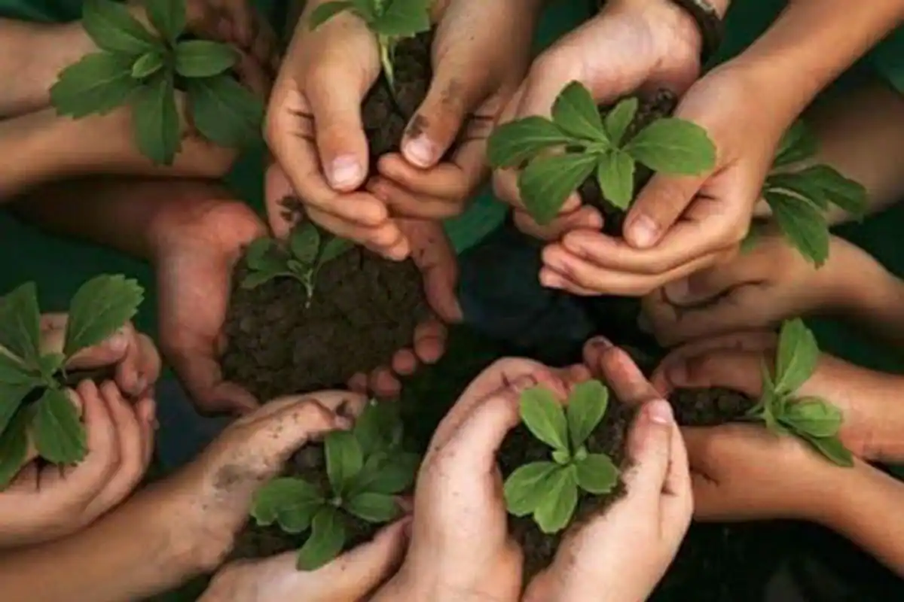

Why is Waste Managemnet Important?
Keeping your environment clean is one of the prerequisites for leading a healthy and happy life! Many of you might not have thought much about a proper waste disposal, but there are several compelling reasons as to why waste management is crucial. Improper disposal of waste has negative ramifications. If you don’t dispose of your waste properly, it will end up polluting the environment and also facilitate the production of greenhouse gas.
When it comes to waste management it is very important to learn how to gain knowledge about it. As it has a big important impact on our lives and the environment. Waste management is a burning issue in the modern world. The avoidance and reduction of waste is a very important part of waste management.
Green lifestyle helps save money by reducing health bills, by eating healthy foods, breathing healthy air and drinking clean water. So, if you want a healthy lifestyle, think green and act green!
Why is waste management important? Unlike hundreds of years ago, most of our waste increasingly belongs in the biodegradable category. This means simple waste management techniques such as burying and burning aren’t as effective any more. Here’s a few reasons why waste management is very important today… Waste management can be profitable Recycling and waste management can lead to bigger profits for companies – especially in the food industry. Simply by planning and portioning ingredients, as well as keeping an efficient supply chain, companies such as restaurants, supermarkets and food factories can boost profits by as much as 10%. This also applies to other industries such as construction – where tightening up stock control can save on waste and increase profits.
Boost company reputation Efficient waste management and recycling can boost your reputation in your industry. Potential and existing customers will see you as a responsible and sustainable company that cares about the environment, the future and the population. It preserves the environment Unfortunately we can’t simply burn all waste we come across. This is because it releases toxins, pollutes the air and can even contribute towards the destruction of the ozone layer. Some waste is hazardous and may cause harm to the environment. This includes plants, animals and habitats. Toxic materials can kill off living things and pollute bodies of water such as lakes and rivers. Reduces production costs An incredible benefit of waste management is it can cut overall production costs in the long run.